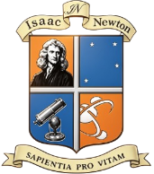

Sapientia pro vitam
Interconectados por un futuro sustentable
En el Colegio Tecnológico Isaac Newton, aprender es hacer, experimentar y compartir. Por eso, durante estas jornadas, los estudiantes de 1° a 6° año presentan en vivo (vía streaming) los proyectos que desarrollaron durante el año.
A través de cuatro grandes ejes, nuestros jóvenes exploran problemas reales, proponen soluciones creativas y muestran cómo la ciencia y la tecnología pueden transformar el mundo que nos rodea.
Te invitamos a recorrer las presentaciones, conocer sus ideas y ser parte de esta experiencia interactiva. La ciencia no se aprende sola: se vive, se cuestiona y se comparte.
Cada curso, desde 1° hasta 6° año, eligió un tema y armó su propio proyecto. Algunos hicieron experimentos, otros programaron juegos, varios grabaron micros y muchos van a exponer en vivo. Todo eso lo vas a poder ver por streaming en YouTube.
Como leíste anteriormente, estas jornadas se tornan más tecnológicas y te invitamos a ser espectador de nuestros proyectos. Detrás de este en vivo se encuentra todo el desempeño y esfuerzo organizado de cada curso.
Nos alegraría muchísimo que formes parte de esta experiencia. Verte del otro lado de la pantalla es lo que más motiva a nuestros estudiantes.
Las Jornadas Newton no nacen de un día para el otro. Detrás de cada exposición, cada streaming y cada proyecto hay semanas de trabajo, ensayos, pruebas y mucha creatividad. Todo empezó en las aulas, cuando los estudiantes comenzaron a pensar qué querían decir, cómo querían mostrarlo y de qué manera podían sorprender.
Esto no es la primera vez. Ya tuvimos jornadas interactivas en años anteriores, con proyectos, videos y mucho trabajo en equipo. Si querés ver cómo nos fue, acá te dejamos algunos links con videos y fotos de ediciones pasadas.
Las redes sociales del colegio Isaac Newton no viven solo de las jornadas. Ahí compartimos el día a día: actividades en el aula, salidas educativas, logros de los estudiantes, fechas importantes, anuncios y también, por supuesto, todo lo relacionado con las Jornadas Newton.
Si querés estar al tanto de lo que pasa en el colegio más allá del streaming, seguinos. Vas a encontrar desde fotos de los recreos hasta invitaciones a eventos, pasando por reflexiones de los profes y proyectos que vamos haciendo durante todo el año. Las jornadas son un momento especial, pero la vida del colegio sigue todos los días.
A continuación, se detallan los trabajos realizados por los estudiantes de 1° a 6° año en el marco de las Jornadas Newton. Cada curso desarrolló su propio proyecto a partir de los ejes de Naturaleza, Sociedad, Consumo y Tecnología, con el objetivo de compartirlo en vivo durante el streaming. Detrás de cada streaming hay una historia. Cada curso, con su estilo y su mirada, abordó los ejes. Algunos investigaron, otros programaron, varios construyeron y todos aprendieron. Te invitamos a conocer sus proyectos.
Descripción del curso y sus proyectos durante las Jornadas Newton 2026. El equipo trabajó durante semanas para preparar una presentación que refleja su aprendizaje a lo largo del año.
Streaming – XXX año
Acá vas a poder ver el streaming del curso en el momento del evento. Todo el proceso, la energía del en vivo y el resultado final de semanas de trabajo.
Cuando el evento esté activo, el video aparecerá embebido en este espacio. Por ahora te dejamos el placeholder con el reproductor listo.
Backstage – XXX año
Todo lo que pasó detrás de cámara: los ensayos, los nervios, la preparación. El proceso creativo que dio vida a la presentación del curso.
Omnium habeat vestra potestate, non aliud quam aversantur incurrere. Sed si ipse aversaris, ad languorem: et mors, paupertas et tu miseros.
"Instituto Educativo de Gestión Privada adscripto a la Enseñanza Oficial de la Provincia de Córdoba"
"La subjetividad del individuo en este marco, es al mismo tiempo singular y emergente de las tramas vinculares que lo trascienden y que lo ubican en una relación dinámica de productor y producido."
No nos encontramos frente a un hombre aislado sino en medio de las tramas vinculares sobre las que él va influyendo y que lo van influenciando
"El sentido de la escuela, sus metodologías y contenidos plasmados en los proyectos curriculares que en ella se trabajen deben vincularse con las exigencias educativas de la condición postmoderna."
La escuela tiene una función implícita y necesaria de ir articulando estos procesos en función de lo que el entorno demanda, en función de una forma de vida, un contexto cultural y socio económico, que acompañe las necesidades, intereses e inquietudes de las personas en la época actual.
"Este paradigma se plantea como propuesta superadora al modelo tradicional de educación rígida, enciclopedista y castrense, en el cual había poco espacio para la imaginación y la creación personal."
Los contenidos se buscan problematizar, incluso hasta lo aparentemente obvio, volviéndolo una actividad de investigación y reflexión de tal manera que la educación no sea sinónimo de transmitir sino de reconocer y construir en la diferencia.
"La educación es concebida entonces como el medio que permite el desarrollo y movilización de las potencialidades individuales y colectivas, al generar razonamientos y comportamientos que confluyen en la formación social."
Es así como entendemos el futuro, construyendo el presente.
Trabajamos en un equipo educativo con un enfoque en la formación integral de los estudiantes. Estamos comprometidos con la calidad de la enseñanza y con la construcción de un equipo de trabajo colaborativo.
Nuestros tres centros educativos acompañan a los alumnos en cada etapa de su crecimiento, desde la primaria hasta el nivel secundario completo.
Las personas que hacen posible el Colegio Isaac Newton cada día.
Molino de Torres 6635
X5021BDE, Córdoba, Argentina